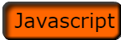

|
 | |
|---|
I created an educational program based on the project that we did focused on tracing letters and using the button object class. The main purpose of this program is to teach young children what the letters are and how to trace them and practice them in the same program. As well as the tracing program, I also included a drawing section so that if they did not want to continue practicing their letters they can express themselves through drawing. I chose this because a lot of children can start practicing writing their letters early and should be given the opportunity on the internet. All they need to know how to do is click the mouse and practice or trace the letter they are on. After that they just press a button to either clear what they did or go to the next letter